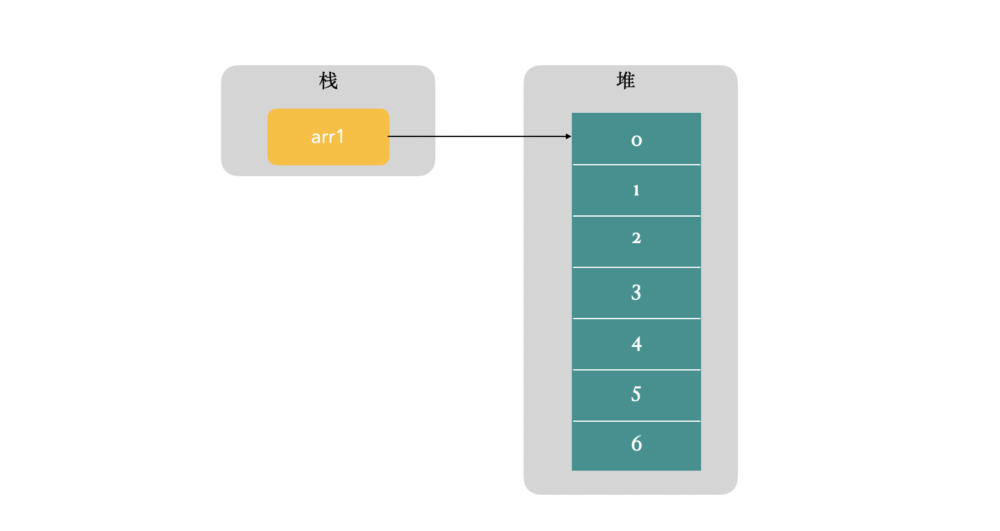
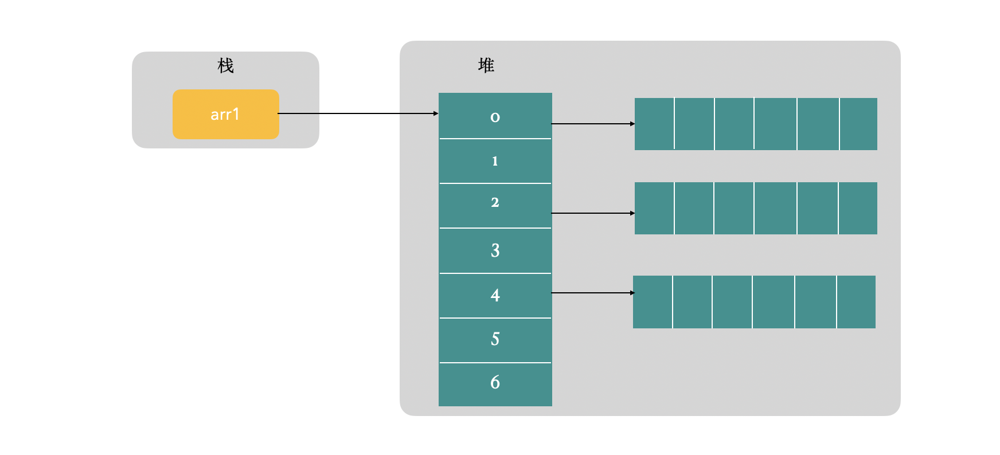

为什么Java二维数组不用指定列的长度
在使用 Java 数组的时候，假如要新建一个二维数组，可以使用以下的方式来新建，只需要指定属数组第一维的长度：
int[][] arr1 = new int[2][];
不用指定第二维的的长度，就可以创建完成。这与 Java 中数组内存分配的方式有关，这篇文章会详细分析 Java 数组的内存分配机制及原理。
本文基于 JDK11
数组的定义和初始化
Java 中的数组与其他语言中的数组没有什么区别，内存都是连续分配，可以通过下标直接访问数组的内容，而且数组中存放的数据需要一致：
int[] arr1 = new int[3];
arr1[0] = 1;
arr1[1] = 1.1; // 报错
数组的长度在创建之后不能改变，如果访问超出长度范围外的位置就会报错。
int[] arr1 = new int[3];
arr1[3] = 0; // 报错，超出数组长度范围，ArrayIndexOutOfBoundsException
定义数组有多种方式，据说第二种声明的方法是为了吸引 C 和 C++ 的程序员，但是第一种声明方法才是官方更加推荐的方式。
int[] arr1 = new int[3];
int arr1[] = new int[3];
再回到二维数组，如果按照下面的方式使用而且数组，就会报错，这与数组的内存分配有关，下文会详细说明。
int[][] arr1 = new int[2][];
arr1[1][1] = 0; // 报错
如果要直接使用，需要指定列的长度，下文会再讲一种初始化的方式。
int[][] arr1 = new int[2][3];
arr1[1][1] = 0; // 正常运行
如果要初始化一维数组：
int[] arr1 = {1,2,3};
int[] arr2 = new int[]{1,2,3};
初始化二维数组：
int[][] arr1 = {{1,2,3},{4,5,6}};
int[][] arr2 = new int[][]{{1,2,3},{4,5,6}};
二维数组每维的长度都可以不一样：
int[][] arr1 = new int[][]{{1,2},{3,4,5}};
对于二维数组，可以被认为是数组的数组，其实二维数组的每一行都是一个单数的数组：
int[][] arr1 = {{1, 2, 3}, {2, 3, 4}};
int[] arr2 = arr1[0];
二维数组在初始化的时候不需要指定行列的数量，其他多维数组的创建方式类似。
数组最多可以到 255 维，超过 255 维在编译的时候就会出现错误。
数组的内存结构
为了能把上面二维数组的问题说清楚，需要先对数组的内存结构做一个说明。
Java 程序在运行的过程中，会为每个线程分配单独的栈空间，如果声明一个数组变量，那么变量就在栈中分配。
而 Java 中对象都是在堆上分配内存，Java 数组也是对象，所以数组也在堆上分配内存。
所以对于一维数组来说，就是如下的结构，栈中变量保存指向数组实例的引用。

对于二维或者多维数组来说，情况就有所不同。二维数组可以被认为是数组的数组。
数组中保存的是指向另一个数组的引用，如下图所示。
也就是说，每个数组中的第二维的长度可以不同。所以如果声明一个新的二维数组，只需要指明第一维的长度，就可以创建好一个数组。但在正式使用之前，还是要将其他维度初始化。

上述例子中使用的都是原生数据类型，原生类型数组存的是值，对于对象数组来说，其中存储的是对象引用。
文 / Rayjun